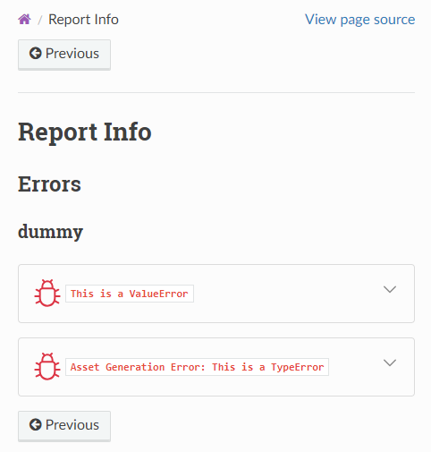

Components
What’s a Component?
A Pharaoh project consists of any amount of components.
The file report_project/index.rst determines how the components are included in the report.
Per default all components are added in sequence on the same level but this could be changed in the template.
A component has following traits:
- Name
The name of the component; used for identification purposes.
- Templates
A list of templates used to generate the component’s files.
- Render Context
An arbitrarily-nested dictionary that is available during generation-time templating. This context enables the reuse of the templates for different purposes.
- Resources
A list of resource definitions that let asset scripts easily access external data by using an alias instead of absolute resource specifiers (like a file path).
- Metadata
This metadata dictionary can be used to lookup components by their metadata.
A potential use case is grouping components by their metadata and create a customized report layout using the
report_project/index.rsttemplate.
Resources
Resources let asset scripts easily access external data by using an alias instead of absolute resource specifiers (like a file path or an RDDL artifact id).
The currently available resource types:
Accessing resources in asset scripts can be done like this:
from pathlib import Path
from pharaoh.assetlib.api import get_resource, FileResource
resource: FileResource = get_resource(alias="<resource_alias>")
first_matching_file_path: Path = resource.locate()
...
To get a resource from a component or update a component’s resource, use these functions:
Templates
Component templates are used to create the main content for components (see Adding Components) and can come in different forms:
Template Directory
The simplest form of a template. A directory with some files.
If assets shall be generated by the component, the directory must contain an
asset_scriptssubdirectory containing Python scripts.Registered Templates
Pharaoh’s Plugin Architecture allows the development of plugins that register templates.
That means plugins may come with their own template directories and register their paths in Pharaoh, so these templates are then selectable using a template identifier, like
my_awesome_plugin.template1.An advantage of plugin templates is, that for those templates, dependencies to other templates can be specified. For example the template
my_awesome_plugin.template1may requires that themy_awesome_plugin.template2template is used at least once in any component, otherwise cross-references won’t work.Template Files/Single-file templates
The smallest and most compact form of a template.
Single-file templates are Python files with suffix
.pharaoh.pywhose Python code creates assets and whose module-level docstring represents the rST content.This file will be internally converted to a template directory:
my_template.pharaoh.py -> index_my_template.rst asset_scripts/my_template.py
Managing Components
Adding Components
Adding a component to a Pharaoh project can be done via the API function
PharaohProject.add_component() or the CLI
command Add:
- PharaohProject.add_component(component_name: str, templates: str | Path | Iterable[str] | Iterable[Path] = ('pharaoh.empty',), render_context: dict | None = None, resources: list[resource.Resource] | None = None, metadata: dict[str, Any] | None = None, index: int = -1, overwrite: bool = False)[source]
Adds a new component to the Pharaoh project
Example:
from pharaoh.api import FileResource, PharaohProject proj = PharaohProject(".") proj.add_component( component_name="component_ABC", templates=[ "plugin_abc.template_xyz", # plugin template "path/to/template/directory", # template directory "path/to/template/file/tmpl.pharaoh.py" # template file ], render_context={"foo": "bar"}, resources=[FileResource(alias="dlh5_result", pattern="C:/temp/**/*.dlh5")], metadata={"some tag": "some value"}, index=-1, # append overwrite=False )
- Parameters:
component_name – The name of the component. Must be a valid Python identifier.
templates –
A list of component templates to use for creating the components project files. Those may be the template identifier (e.g.
plugin_abc.template_xyz) of a registered plugin template, a path to a template directory or a path to a template file (single-file template).Since multiple template may be specified, their order matters in cases where different templates create equally-named files, thus templates might overwrite files of the previous templates.
This enables template-composition, where template designers can chunk their bigger templates into smaller reusable building blocks.
If omitted, an empty default template is used.
render_context – The Jinja rendering context for the selected template. The actual template rendering context will have
component_name,resourcesandmetadataavailable under the respective keys.resources – A list of Resource instances, defining the component’s resources used in asset scripts
metadata – A dictionary of metadata that may be used to find the component via
PharaohProject.find_component()method.overwrite – If True, an already existing component will be overwritten
Updating Components
Once a component is generated, the options to modify it are limited to:
Removing Components
A generated component can be removed via
PharaohProject.remove_component(),
which results in deletion of report-project/components/<component-name> and its entry in pharaoh.yaml:
Finding Components
Components can be looked up via their metadata using the function
PharaohProject.get_component_names_by_metadata().
Built-In Templates
Pharaoh comes with some builtin templates:
"pharaoh.default_project"The default project template that is used when creating a new project. It contains a basic Sphinx project with a
Pharaoh logo
ReadTheDocs theme with customized layout and footer templates (includes some JS/CSS to display dynamic tables)
Pharaoh CLI CMD wrappers for quick access to the most important commands
"pharaoh.empty"The default template for
PharaohProject.add_component()if no template is specified."pharaoh.report_info"The template for a component that shows a list of all errors that occurred during asset generation in other components, grouped by the component name.
Example:
